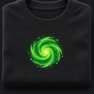

כל הדמויות. כל הסרטונים. ואפשר לדבר עם כולן.
לשלומיוורס ←עכשיו ב-שלומיוורס
המשחקייה של חנימשחקים כשרים לכל המשפחה. ניגונים בלבד, ושומר שבת.
לשחק ←
כל הדמויות. כל הסרטונים. ואפשר לדבר עם כולן.
לשלומיוורס ←
החנות של יותםחולצות ועוד←